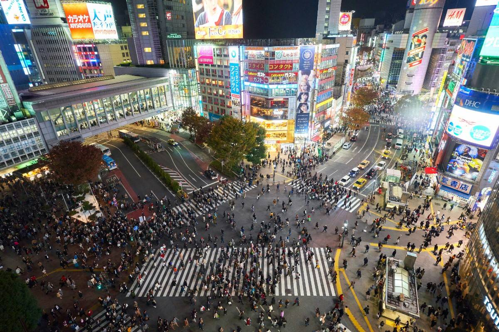
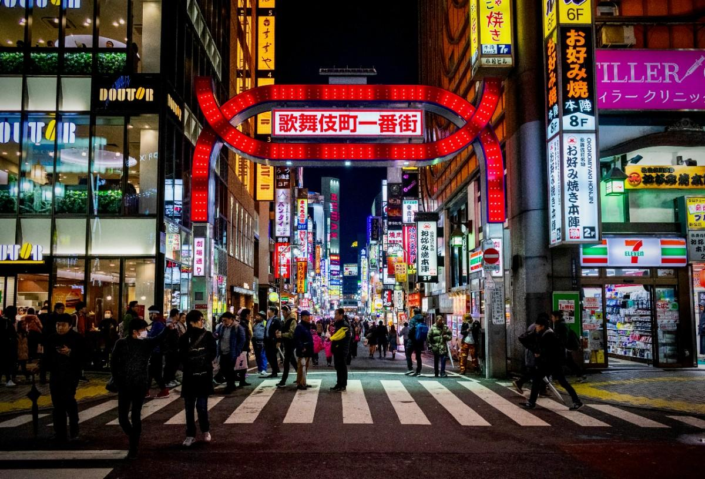
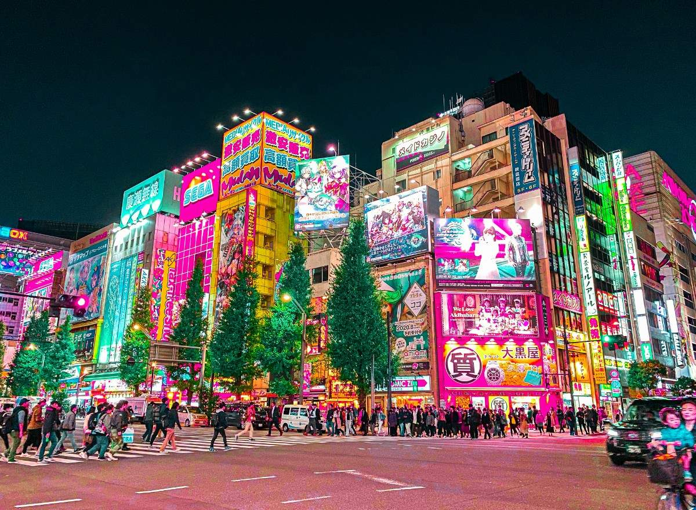

The heart of modern Japan where tradition meets the future.
Tokyo is the capital of Japan and one of the most advanced and dynamic cities in the world. It is a place where ultra-modern technology meets deep-rooted traditions, creating a unique contrast you won’t find anywhere else. Skyscrapers, digital billboards, and high-speed trains define the skyline, while hidden within the city are peaceful temples, historic neighborhoods, and quiet gardens. Tokyo offers an endless range of experiences — from luxury shopping districts like Ginza to youth culture hubs like Shibuya and Harajuku. The city never truly sleeps, and every area has its own identity, making exploration feel limitless.



Fast-paced, modern, ambitious, energetic
Tokyo is perfect for people who want variety and energy. Whether you’re into technology, fashion, food, nightlife, or culture, Tokyo has everything at a world-class level. It’s also one of the safest and most efficient cities globally, making it ideal for both travel and long-term living.